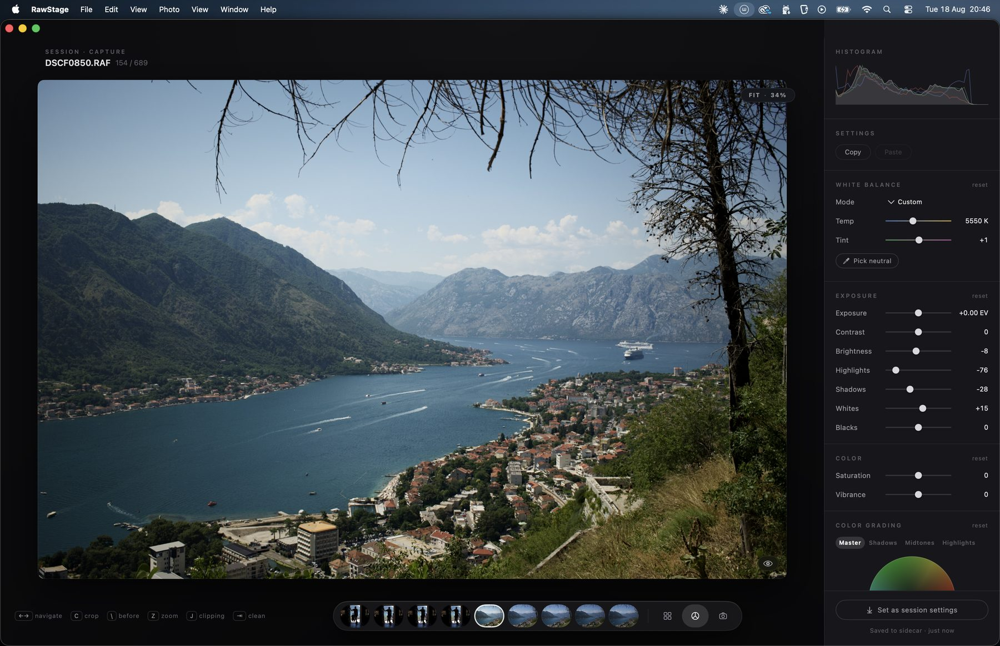
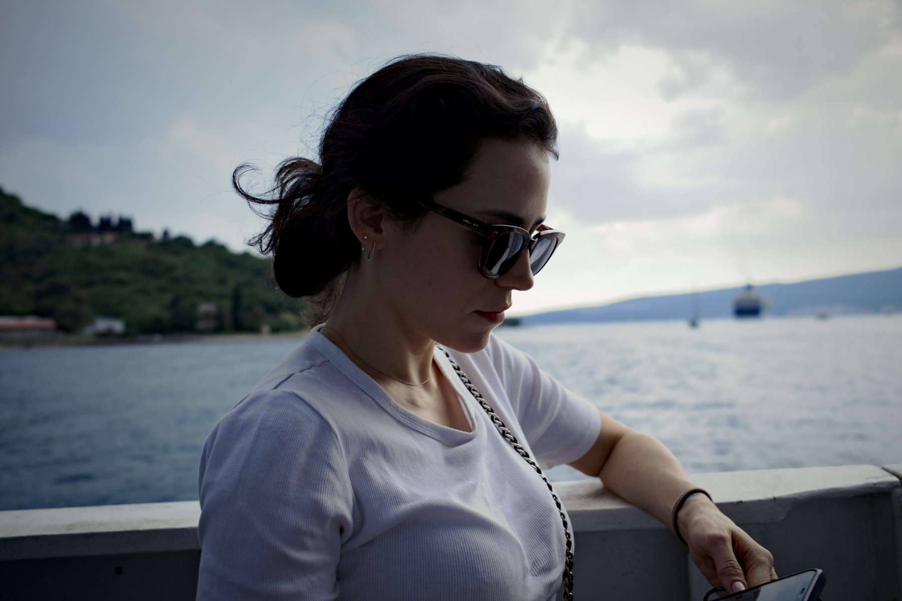
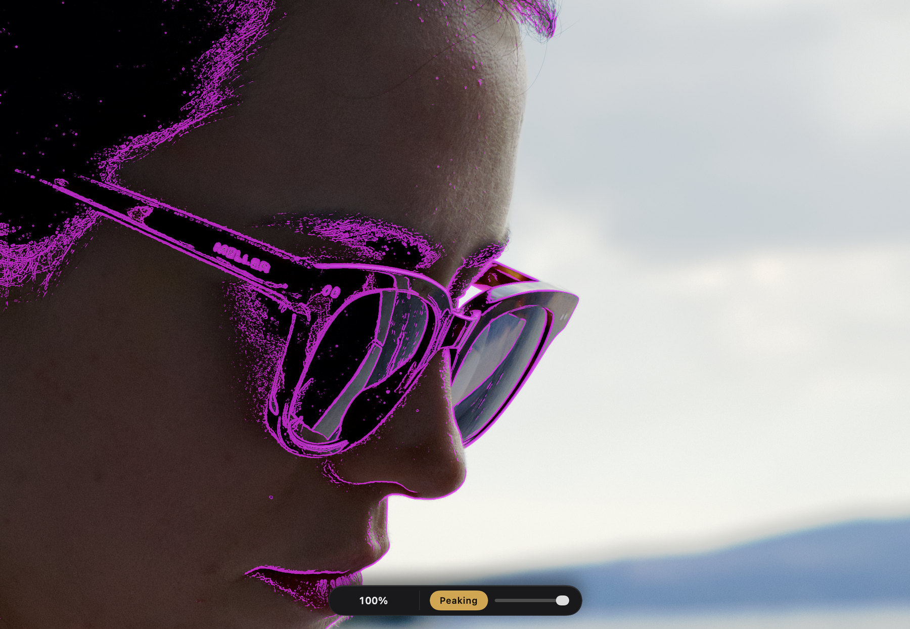
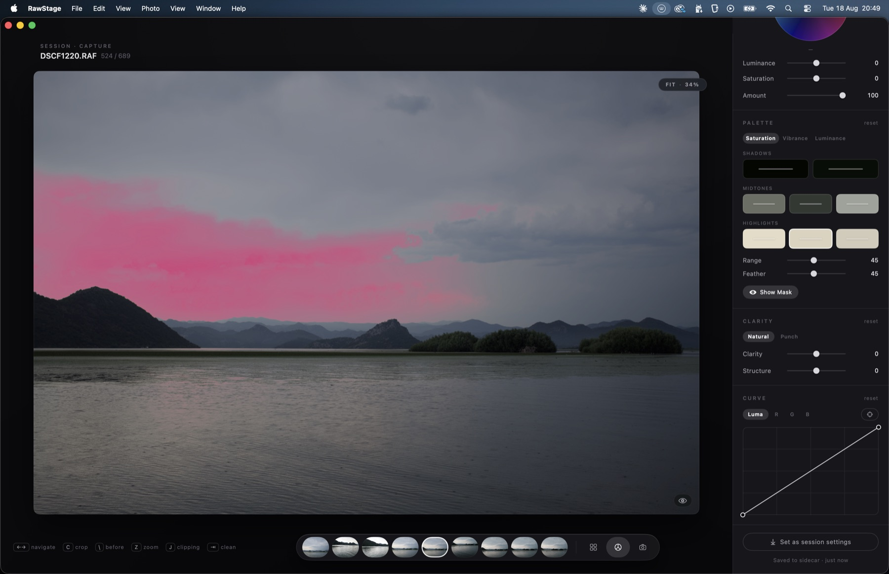
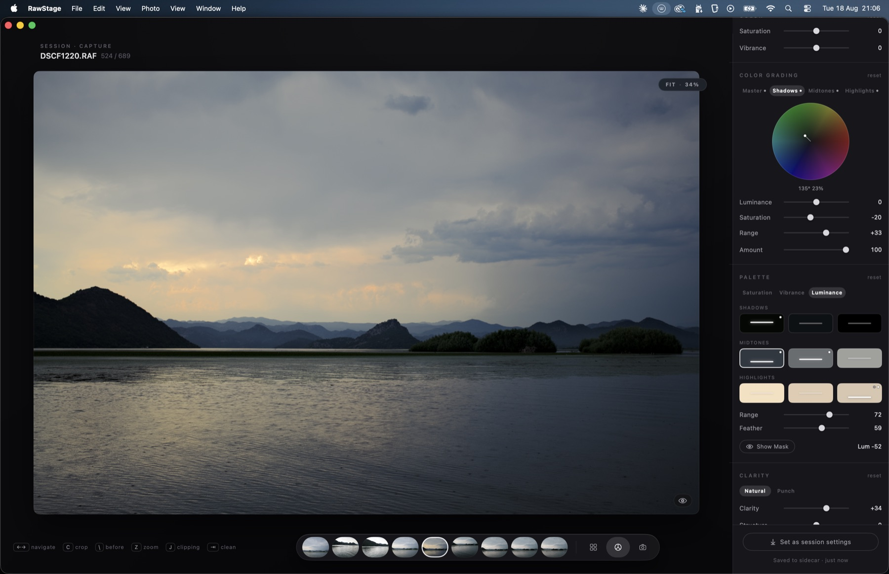

Everything you need to run a real session in RawStage:
open a folder, cull it, develop it, put a second screen to work, build a
look, and shoot straight into it with a Fujifilm body. Twenty minutes,
read once.
This describes beta 0.9 (build 21) on macOS 14 or
later. Nothing here is aspirational — every menu item, key and field
below is in the build you downloaded.
rawstage.app/start.html
RawStage is signed with an Apple Developer ID and notarized
by Apple, so macOS opens it without an argument and without a trip to
System Settings.
Open RawStage-beta.dmg and drag RawStage into your
Applications folder.
Eject the disk image, then launch RawStage from Applications.
The first launch shows the standard macOS confirmation that the app
was downloaded from the internet. Click Open. It never asks
again.
There is no licence key
Nothing to activate, no account, no sign-in. The build carries a 60-day
clock and every tool — Pro included — is open while it runs. See
section 10 for exactly what changes when it ends.
02
The folder is the session
There is no catalog and no import. A session is a folder on
your disk, and RawStage writes what you do into small JSON sidecar files
next to your RAWs. Move the folder, archive it, open it in ten years —
everything travels with the photographs.
⌘OOpen Session… — point it at a folder that already
has photographs in it. That is the whole import step.
⌘NNew Session… — creates an empty folder ready to
receive frames. You choose a name, a location and a capture naming
pattern here.
⇧⌘NStart Tether Session… — the same thing, but it
opens straight into the Tether room waiting for the camera. See
section 07.
File → Open Recent keeps the last sessions. A folder that moved
or was deleted shows dimmed rather than disappearing.
You can also drag a folder onto the window at any moment. That
opens it as a session.
Once a session is open, the window has three rooms and you move between
them with ⌘1⌘2⌘3 — or simply
G, D, T for Grid, Develop and Tether.
File → Reveal Session in Finder takes you to the folder itself
whenever you want to see what is actually on disk.
03
Culling with one hand
The grid is built to be driven from the keyboard while the
other hand holds a coffee or a camera. Every key below works in the grid
and in Develop.
←→ move through the session.
1–5 set a star rating, 0 clears it.
P picks, X rejects. ⇧P switches the
grid to picks only.
⌥1–⌥5 filter by rating (≥ that many stars);
View → Filter by Rating → Off clears it.
Photo → Color Tag adds a colour label when stars and picks are
not enough.
⌘+ and ⌘− grow and shrink the thumbnails.
⌘A selects everything visible, ⇧⌘A deselects.
Nothing is moved or deleted
A rejection is a flag in a sidecar, not a file operation. RawStage never
moves, renames or deletes your photographs.
04
The develop panel
Press D (or ⌘2) on any photograph. The
panel on the right is the classic darkroom set, top to bottom, in the order
you actually work: Histogram, White Balance, Exposure,
Color, Color Grading, Palette, Clarity,
Curve, Levels, Detail and Geometry.

The develop room. The photograph is the only bright thing on
the screen — that is deliberate, and it is why the panel is grey.
Four habits are worth building on day one:
Hold \ to see the file underneath. Press and hold
anywhere in the viewer and the photograph reverts to the RAW as shot;
release and your edit comes back. View → Show Original does the
same as a toggle.
Every module has an eye. The small eye beside a section title
bypasses that section alone, so you can ask "is my Clarity actually
helping?" without undoing anything.
J shows clipping. Hold it and blown highlights and
crushed shadows are marked on the photograph.
R resets the edit on the current photograph, and the
reset beside each section title resets just that section.
To carry an edit across the session: ⇧⌘C copies the settings,
select the photographs you want and ⇧⌘V pastes them.
⌘Z undoes the paste if it went somewhere you did not mean.
Geometry — crop, rotation, straightening — is never included: framing is
per photograph.
Two more keys that earn their place: C opens the crop with
ratio presets and corner rotation, and ⇥ hides all the chrome so
the photograph is alone on the screen. Z toggles zoom, and
View → Zoom 100% and Zoom to Fit are there when you want to be
precise about it.
05
The two studio windows
Both live in the Window menu, both are free, and both
are real windows — drag them to a second screen and leave them there.
Viewer — ⌥⌘V
A window with nothing in it but the photograph: no panel, no filmstrip,
no title. It is what you turn towards the client or the art director.
Window → Viewer Source decides what it shows:
Current Selection — it follows you as you navigate. Use this
when you are reviewing together.
Last Capture — it always shows the newest frame off the camera.
Use this while you are shooting, so the client sees the shot you just
took while you are still working on an earlier one.

The Viewer on a second screen. Nothing to explain, nothing to
accidentally click.
Focus Check — ⌥⌘F
The instrument that answers the one question you cannot fix later: was
it the eye, or the eyelash?
It opens at 100% and steps through 50% · 100% · 200% ·
400%. With the Focus Check window in front, ⌘+ and
⌘− step the zoom instead of the thumbnails.
Drag inside it to pan. The window is resizable — make it as big as
the screen you put it on.
The Peaking switch in the floating control paints magenta over
the detail that is genuinely sharp, and the slider beside it sets how
fussy that judgement is.
Why peaking sometimes waits
Peaking only draws at 100% and above, and only once the sharp render has
arrived. An overlay computed on a scaled-down preview measures detail the
scaling already destroyed — it would light up a soft frame and tell you it
was sharp. Below 1:1 the switch stays quiet on purpose. The resolution of
the overlay is the resolution of the answer.

Focus Check at 100% with peaking on. The glasses, the lashes
and the lip are lit; the cheek falling away is not.
06
MOOD — a look in one gesture
The Palette section has two modes, and they answer two
different questions. Image adjusts the colours the photograph already
has. MOOD imposes colours on it, one per tonal band. Grading wheels
push tones around; MOOD decides what colour the shadows, the midtones and
the highlights are.
To turn it on: in the develop panel, find PALETTE and click
the Mood tab. That is the whole activation — there is no separate
module to enable.
What you then have, top to bottom:
Color · Soft Light · Screen — how the imposed colour composites
onto the photograph. Color is a veil: hue and chroma only, tone
untouched. Soft Light and Screen move the tone along with
the colour, the way a gel or a lifted black would.
Shadows, Midtones, Highlights, General Tone
— four rows. Click the colour well on the right of a row and the hue disc
opens: drag the puck to choose the colour, further from the centre for
more chroma. The Strength slider under it (0–100) says how much of
that colour lands. General Tone acts everywhere and its slider is called
Amount.
Tone (−100 to +100) is the mood's own contrast. It lives inside
the module — the section's reset and its bypass eye cover it, and it never
writes into your Curve.
From Image… reads another photograph's palette and plants it in
the four targets. You can also drop an image file straight onto the
button. It is a seed, not a link: the image is read once, its colours are
planted, and nothing about it is kept.
Show Mask paints the pixels the active band is holding, so you
can see what you are colouring before you commit to it.

Show Mask. The pink is not the edit — it is the selection, so
you stop guessing why the sky moved.
A working order
Get exposure and white balance right first, then reach for MOOD, then
refine individual colours in Image mode on top. MOOD is applied
first in the engine and the swatch adjustments refine what it produced —
working in that order means the panel behaves the way the picture does.
07
A tethered session with a Fujifilm camera
Fujifilm X and GFX bodies talk to RawStage directly — no
X Acquire, no Capture One, nothing else running. Frames land in the session
in roughly a third of a second.
On the camera
Set the USB mode to USB TETHER SHOOTING AUTO. On most X and GFX
bodies that is SET UP → CONNECTION SETTING → USB MODE (some bodies
call it PC CONNECTION MODE). This is the one camera setting that
matters.
Use a cable that carries data. A charging-only USB-C cable will power
the camera and never appear on the Mac — it is the single most common
reason a tether "doesn't work".
Plug the camera into the Mac directly if you can. Hubs work, but they
are the first thing to remove when something is flaky.
In RawStage
Press ⇧⌘N — Start Tether Session…. Name the session,
choose where it lives, and set a capture naming pattern if you want one
(a prefix and a counter, for example MARG-0001).
If the camera is already connected, Start tethered capture is
on by default and the panel tells you which body it found.
You land in the Tether room. The pill at the top right is the HUD: the
camera's name, the number of captures, and the milliseconds from the last
shutter click to the picture appearing.
Shoot. Each frame arrives, develops with the session's settings, and
is ready to judge. ←→ review, P and
X pick and reject, Z zooms, ⇥ clears the
chrome.

The session, mid-flight. Every capture arrives already
carrying the session's settings.
Session settings — the part
that makes tethering worth it
At the bottom of the develop panel is a button with three states. Press
it to move through them:
Set as session settings — off. New captures inherit
nothing.
Session settings: following — what is on screen is
what the next capture will inherit, and every adjustment you make updates
it. Light the first frame, get it right, and the rest of the session
arrives already looking like that.
Session settings: frozen — the current settings keep being
inherited but stop following your adjustments. Reopening a session always
returns it frozen, so nothing changes behind your back.
Only adjustments move the settings. Walking through the session
with follow on changes nothing — that was a deliberate fix, because
otherwise a pass through the culling would contaminate the whole shoot. And
geometry is never inherited: crop and rotation are composition, per frame.
The trick worth knowing
Open Focus Check (⌥⌘F), zoom to 100% and put it on the
model's eye. With tethering live, every new capture keeps that zoom and
that pan — so each shot lands on the same point and you can see the focus
fall, frame after frame, without touching anything.
Unplug the camera, let it sleep, pull the cable by accident — the session
does not care. Reconnect and captures resume where they left off.
08
Any other camera brand
Native tethering is Fujifilm-first today. Every other brand
gets there through a hot folder, and the experience inside RawStage is
identical once the file lands.
Start your camera maker's own tether utility and point its download
folder at the session folder.
Start a tether session in RawStage on that same folder.
Shoot. Files appear in the session as they arrive — RawStage waits
until a file has finished copying before it touches it, and reads the
camera's name out of the file's own EXIF, so the HUD says something like
Sony α7R III · hot folder rather than a generic label.
Sony owners: one measurement, not a promise
A Sony α7R IV has fed RawStage directly, with no Sony software running —
one body, one session, four frames. If you want to try it: PC Remote:
Off and USB Connection: MTP (not Auto). PC Remote switched on is
what stops it, and the "PC" that then appears on the camera's screen is the
failure, not the confirmation. Canon is next on the bench. If you have a
body that isn't a Fuji, Help → Export Logs and a note about what
happened is the most useful thing you can send us.
09
Export
⌘E opens the export panel over whatever you have
selected.
Source — Selected, Picks, Filtered or All, each with its count
beside it. If you are in picks-only view, Picks is already chosen.
Format — JPEG and PNG are free. TIFF (8 and 16-bit) and HEIC
are Pro, and open during the 60 days.
Size — Original, long edge in pixels, exact width × height, or
print in centimetres at a DPI, with the resulting pixels calculated
in front of you.
Color space — sRGB by default; Display P3 and Adobe RGB are
Pro.
Destination — an Export subfolder inside the session by
default, so the output travels with the session, or any folder you
choose.
Presets — Instagram post, square and story, Facebook, web,
full-resolution JPEG, print at 300 DPI, and a Photoshop-ready 16-bit
TIFF.
Exports run in the background with a progress pill in the chrome, and you
can carry on working — or cancel.
10
The 60 days, and what happens after
This build has everything unlocked for 60 days. It matters
more what happens at the end than what happens now, so here it is plainly.
What keeps working, free, forever: culling, tethered capture, both
studio windows, the whole classic develop panel — white balance, exposure,
curves, levels, clarity, vignette, sharpening, noise reduction, crop and
geometry — copy and paste settings, and export to JPEG and PNG.
What locks: the colour grading wheels, the Palette editor and
MOOD, LUTs and saved presets, and the professional export formats — 16-bit
TIFF, HEIC, print sizing, Display P3 and Adobe RGB.
Nothing you made is taken back
The Pro settings already saved in your sidecars stay exactly where they
are. They keep rendering on screen and they keep coming out in your
exports — you simply stop being able to change them until you buy Pro.
Loading preserves; applying creates. That distinction is written into the
app, and it is the reason a session you shot during the beta is still a
session you can deliver afterwards.
11
Every keyboard shortcut
The same list lives in
the app under Help → Keyboard Shortcuts, and the hints along the
bottom of the window are the short version.
Session
⌘NNew Session…
⇧⌘NStart Tether Session…
⌘OOpen Session…
⌘EExport…
View
⌘1 ⌘2 ⌘3Grid, Develop, Tether
G D TGrid, Develop, Tether
ZZoom
⇥Clean view
JClipping warnings
\Show the original
⌘+ ⌘−Thumbnail size — or Focus Check zoom
Culling
1–5Rating
0No rating
PPick
XReject
⇧PPicks only
⌥1–⌥5Filter by rating
←→Navigate
Editing
⇧⌘CCopy settings
⇧⌘VPaste settings
⌘ZUndo paste
⌘ASelect all
⇧⌘ADeselect all
CCrop
⌘[ ⌘]Rotate left / right
RReset edits
Windows
⌥⌘VViewer window
⌥⌘FFocus Check
12
When something goes wrong
This is a beta and you are one of the people it is for. Two
items in the Help menu are the whole reporting workflow:
Help → Send Feedback… opens a message with the build number
already filled in. Tell us what you were doing and what happened.
Help → Export Logs… writes the technical story to a single
file. Attaching it turns "the tether stopped" into something we can
actually fix.
The single most useful report you can send: plug in your camera, tell us
the model name, and say whether tethering worked. Then run one real session
end to end — shoot, cull, develop, export — and tell us what stuttered or
surprised you.
That's the whole app.
Open a folder and shoot something. If a step here doesn't match what you
see on screen, that is a bug in this page and we want to hear about it.